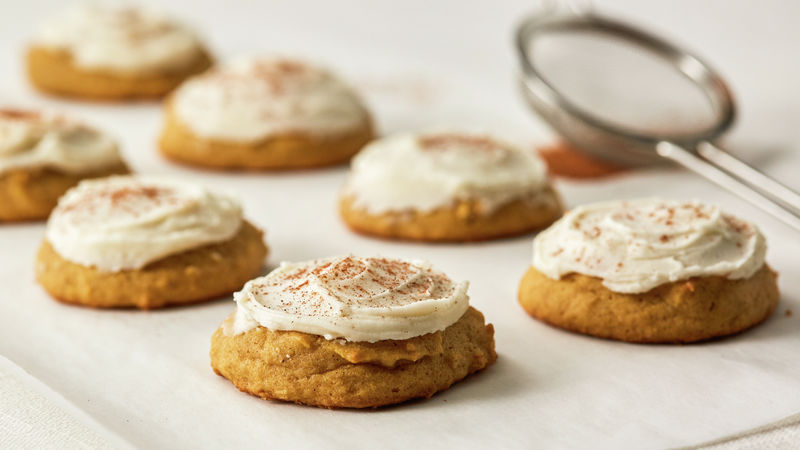

Pumpkin is perfect for fall baking. Whether you are looking for sweet or savory, pumpkin adds an amazing fall flavor to any dish.
Recipe - Frosted Pumpkin Cookies

Ingredients
2 cups butter, softened
2 cups granulated sugar
2 tsp. baking powder
2 tsp. baking soda
1 tsp salt
1 tsp. cinnamon
1 tsp. ground nutmeg
2 eggs
2 tsp. vanilla extract
15 ounce can of pumpkin
4 cups flour
Frosting
1/2 cup of butter
1/2 cup packed brown sugar
1/4 cup of milk
1 tsp. vanilla
3 to 4 cups of powdered sugar
Instructions
Preheat oven to 350 degrees. In a large bowl beat the 2 cups of butter with an electric mixer on medium speed for 30 seconds. Add granulated sugar, baking powder, baking soda, salt, the 1 teaspoon cinnamon, and the nutmeg. Beat until combined. Beat in the eggs and 2 teaspoons of vanilla until combined. Beat in pumpkin. Beat in as much of the four as you can with the mixer. Stir in remaining flour with a wooden spoon.
Drop dough by heaping teaspoons 2 inches apart on ungreased cookie sheets. Bake for 10 to 12 minutes or until tops are set. Transfer to wire racks to cool.
For frosting, in a small saucepan heat the 1/2 cup butter and brown sugar until melted and smooth. Transfer to a medium bowl. Stir in milk and 1 teaspoon of vanilla. Beat in powdered sugar until smooth. Spread frosting on cookies. Sprinkle with additional cinnamon if desired.